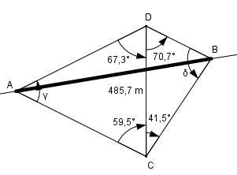

Aufgabe 195 Durch einen Berg soll ein waagerechter Straßen- tunnel von A nach B gebohrt werden. Zur Ermittlung von dessen Länge l steckt man auf dem Berg eine waagerechte Standlinie CD mit einer Länge von 487,5 ab und misst die Winkel DCB = 41,5°, ACD = 59,5°, CDA = 67,3° und CDB = 70,7°. Wie groß ist l?

Im Dreieck ACD: γ = 180° - 59,5° - 67,3° = 53,2° Fall SWW: Sinussatz: 485,7 m AD ---------- = ----------- |*sin 59,5° sin γ sin 59,5° 485,7 m * sin 59,5° AD = --------------------- = sin 53,2° 485,7 m * 0,8616 = ------------------ = 522,6 m 0,8007 Im Dreieck CBD: δ = 180° - 41,5° - 70,7° = 67,8° Fall SWW: Sinussatz: 485,7 m DB ---------- = ----------- |*sin 41,5° sin δ sin 41,5° 485,7 m * sin 41,5° DB = ---------------------- = sin 67,8° 485,7 m * 0,6626 = ------------------ = 347,6 m 0,9259 Im Dreieck ABD: Fall SWS Cosinussatz: AB2 = AD2 + DB2 - 2*AD * DB * cos (67,3° + 70,7°) AB2 = 522,62 + 347,62 - 2*522,6*347,6 * cos 138° AB2 = 522,62 + 347,62 - 2*522,6*347,6*(-0,7431) AB2 = 663 913,3 |√ AB = 814,8 m = l